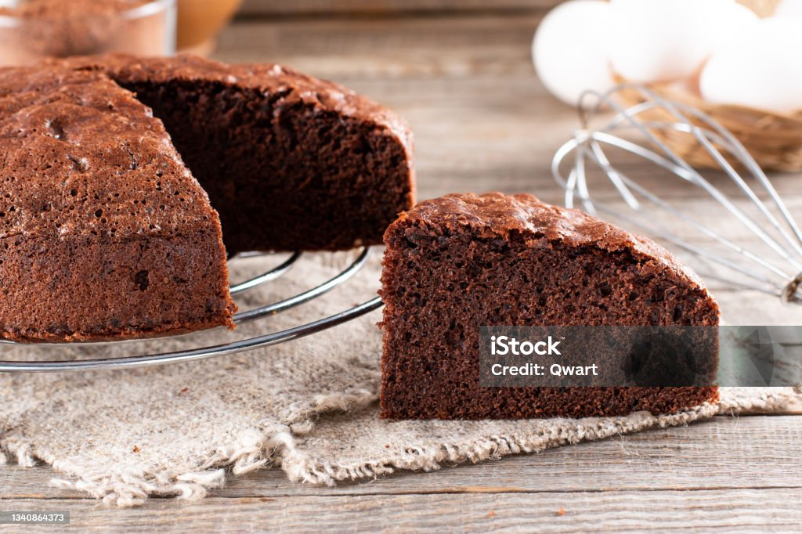

A Sponge Chocolate Cake is a light, airy, and fluffy dessert made with simple ingredients like flour, sugar, eggs, and cocoa powder. It is celebrated for its soft texture, achieved through careful folding of ingredients to retain air in the batter.
For the cake: